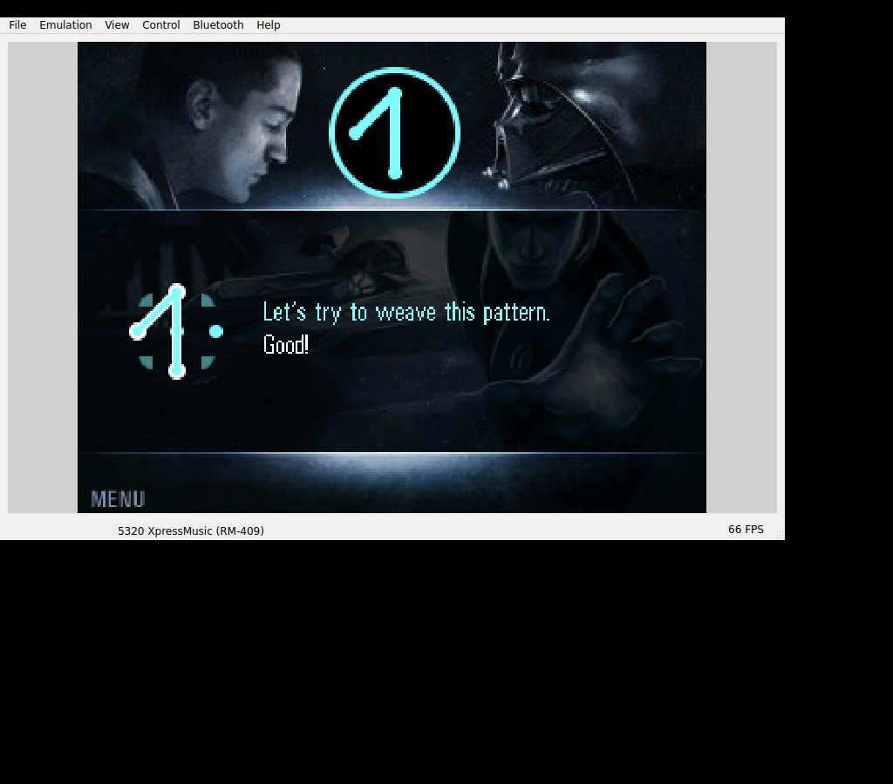

This version of The Force Unleashed was CellWeaver. We needed to trace the game’s original keypad patterns, so a familiar free-roaming action layout wouldn’t tell us much about its controls.SW02
Upright keys.
The original startup asked about sound and keypad orientation. Choosing the upright grid exposed the pattern controls: directions and center, or numbers 1–9, with Gaming B or the right selection key supplying the Force input.SW02
The retained Linux tutorial accepted Left → Up → numeric 8 and answered “Good!” That is a small, specific player-controlled success. The separate 3D attract scene did not turn it into campaign progress.SW03SW05

The original CellWeaver tutorial accepts the first woven pattern and displays “Good!” Retained Linux EKA2L1 screenshot; no controlled campaign progress or Android-phone result is implied.
Open the image for the full original view.
SW90Leave Bounce’s game behind.
We reused Bounce 0.1.1’s Nokia 5320 environment and renderer repair, removed Bounce’s game and registration state, and selected the original installer’s appropriate device files. The clean seed then booted to Star Wars’ own sound confirmation.SW04SW06
That’s another part of what I mean by LEGION. We could carry a working environment and repaired resources into a new title, with its own original files, registration and tests. This route still used EKA2L1 and Nokia services.SW01SW07
About these records
The image and pattern outcome are historical Linux original-game execution, not an Android-phone verdict. The tutorial and attract scene have separate meanings. The dependency-bearing device profile and supplied installer helpers are identified by the source; this is not a claim of a software-independent Nokia runtime or completed campaign.
The receipts
Selected source lines, investigation notes and recorded feedback. Open a receipt for the original context and scope.
SW02 / An upright keypad and original CellWeaver inputCheckpoint investigation notes
Source: Star_Wars_Force_Unleashed_Bridge_v0.1.0_PRIVATE_CHECKPOINT.zip / Star_Wars_Force_Unleashed_Bridge_v0.1.0_PRIVATE/README_FIRST.txt · selected lines 9–21
FIRST RUN The original game asks for sound and keypad orientation. Tap ORIGINAL KEYPAD, press 2 for the upright 1–9 grid, then confirm with MENU L / OK. Choose PLAY > TUTORIAL to learn the original CellWeaver system. This is a pattern-based game: the character is not controlled like a free-roaming FPS. CONTROLS Weave patterns with the original D-pad, including center, or numeric 1–9. FORCE B sends original Gaming Key B: unleash offensive powers; hold it while weaving corner patterns for defense. MENU R is the original alternate Force trigger and also fast-forwards dialogue when indicated. MENU L selects/pauses. Follow the native screen's softkey labels. Gaming A and original Clear remain available. Android system Back exits gameplay separately from original keys.
SW03 / The first tutorial pattern, not campaign progressCheckpoint investigation notes
Source: Star_Wars_Force_Unleashed_Bridge_v0.1.0_PRIVATE_CHECKPOINT.zip / Star_Wars_Force_Unleashed_Bridge_v0.1.0_PRIVATE/README_FIRST.txt · selected lines 48–58
The original Linux host run reached startup, menu, calibration, Help/Controls, and CellWeaver tutorial practice. The game accepted the first pattern after Left, Up and numeric 8, demonstrating original D-pad and numeric input. The retained 3D scene screenshot is the game's attract sequence; it is not presented as player-controlled story progress. No campaign completion, live audio output, save/load round trip or physical Android gameplay is claimed. Phone graphics/audio, comfort, rotation behavior, background/resume, report export and Back still need device evidence. Online Arena/Rankings are not supported by this offline test build; a host ranking request failed. One original guest Exit path terminated the Linux host; Android system Back uses the dedicated bridge cleanup and still needs physical-device testing.
SW05 / The exact host, framework and renderer scopeCheckpoint investigation notes
Source: Star_Wars_Force_Unleashed_Bridge_v0.1.0_PRIVATE_CHECKPOINT.zip / Star_Wars_Force_Unleashed_Bridge_v0.1.0_PRIVATE/VERIFICATION.txt · selected lines 3–17
PASS: Android API 35 Java compile and min-API D8; signed/aligned APK. PASS: 82 original-payload/core/renderer/kit/clean-seed packaging checks. PASS: 4 actual Robolectric Android API 34 Activity tests against this bridge. PASS: 5 exact APK GLES programs compile/link/use; 256 fixture pixels match. PASS: 27 installer records pass embedded SHA-1; 25 selected bytes preserved. Linux host evidence: startup, calibration, menus/controls, tutorial accepts Left -> Up -> numeric 8 as the first pattern. No campaign progress implied. starwars-recovered.png is the native attract sequence, not controlled story. The first host investigation used the reused environment before title cleanup; final seed cold boot is recorded separately. Linux core differs from Android. NOT DEVICE VERIFIED: original Android execution/rendering/audio, thumb comfort, phone pause/resume, save/load, live Downloads export and Android Back. Online features are unverified. Original host Exit path crashed once.
SW90 / Historical image / Star Wars: The Force UnleashedHistorical host capture
Source: Star_Wars_Force_Unleashed_Bridge_v0.1.0_PRIVATE/evidence/starwars-pattern-success.png
Retained historical host output. Original emulator chrome, where present, is part of the unchanged source image. No phone capture or phone performance is inferred.
Unchanged historical image. Source member: Star_Wars_Force_Unleashed_Bridge_v0.1.0_PRIVATE/evidence/starwars-pattern-success.png SHA-256: 9d1f58bcab178a6aa31048848ab96cb412bf1616d3dee1fc64b84decfa569ed2 The original CellWeaver tutorial accepts the first woven pattern and displays “Good!” Retained Linux EKA2L1 screenshot; no controlled campaign progress or Android-phone result is implied. Scope: Historical Linux original-game tutorial; host runtime differs from inherited Android core.
SW04 / Bounce environment reuse and original installer selectionCheckpoint investigation notes
Source: Star_Wars_Force_Unleashed_Bridge_v0.1.0_PRIVATE_CHECKPOINT.zip / Star_Wars_Force_Unleashed_Bridge_v0.1.0_PRIVATE/README_FIRST.txt · selected lines 60–73
ORIGINAL INTEGRITY / REUSE The supplied .n-gage is retained unchanged. All 27 installer payload records passed their embedded SHA-1 checks. The final seed installs 25 unchanged records, selecting sw_fileaccess.dll payload 17 because this FP2 firmware advertises series60v3.2.sis; payloads 18 and 19 are alternate device versions. The supplied package already contains StarWarsCrack.dll and other helpers; this is not represented as untouched retail media. Original game code, graphics, audio, levels and scripts were not changed by this task. Bounce v0.1.1 supplied the newer firmware/service environment and its proven renderer asset repair; Ashen v0.1.3 supplied the original unmodified Android core lineage. The inherited Bounce game, registrations and a partial ROM staging file were removed. A small generated registration points directly to the original mygame.exe. No host settings/progress are in the final seed.
SW06 / Final clean seed reaches the original sound confirmationCheckpoint investigation notes
Source: Star_Wars_Force_Unleashed_Bridge_v0.1.0_PRIVATE_CHECKPOINT.zip / Star_Wars_Force_Unleashed_Bridge_v0.1.0_PRIVATE/VERIFICATION.txt · selected lines 22–23
Final clean APK seed cold boot: PASS, original sound confirmation rendered. See final-seed-host-verification.json and final-seed screenshots/log.
SW01 / The dependency-bearing N-Gage 2.0 environmentCheckpoint investigation notes
Source: Star_Wars_Force_Unleashed_Bridge_v0.1.0_PRIVATE_CHECKPOINT.zip / Star_Wars_Force_Unleashed_Bridge_v0.1.0_PRIVATE/README_FIRST.txt · selected lines 3–7
Install Star_Wars_Force_Unleashed_Bridge_v0.1.0_PRIVATE.apk. Android 10+ / ARM64 / OpenGL ES 3.0. Package: com.wakka.starwars. The bundled original game runs through EKA2L1 with the Nokia 5320 Symbian 9.3 FP2 / N-Gage 2.0 environment. First launch prepares the private files. No external emulator or launcher screen is required.
SW07 / Original game and EKA2L1 creditsCheckpoint investigation notes
Source: Star_Wars_Force_Unleashed_Bridge_v0.1.0_PRIVATE_CHECKPOINT.zip / Star_Wars_Force_Unleashed_Bridge_v0.1.0_PRIVATE/THIRD_PARTY_NOTICES.txt · selected lines 3–12
EKA2L1 native ARM64 compatibility runtime: EKA2L1 contributors, GPL-3.0. Retained source and license: upstream/EKA2L1-source-2b253a25e.zip and upstream/EKA2L1-LICENSE.txt. Exact binary/source provenance is recorded in upstream/PROVENANCE.json. Runtime binary is unchanged from Ashen lineage. Star Wars: The Force Unleashed: original copyright notices and ownership of Lucasfilm, Universomo, THQ Wireless and other respective rights holders remain. The supplied original game and pre-existing compatibility helpers are kept private and byte-identical. Nokia Symbian/N-Gage firmware and service files retain their respective original ownership and notices.